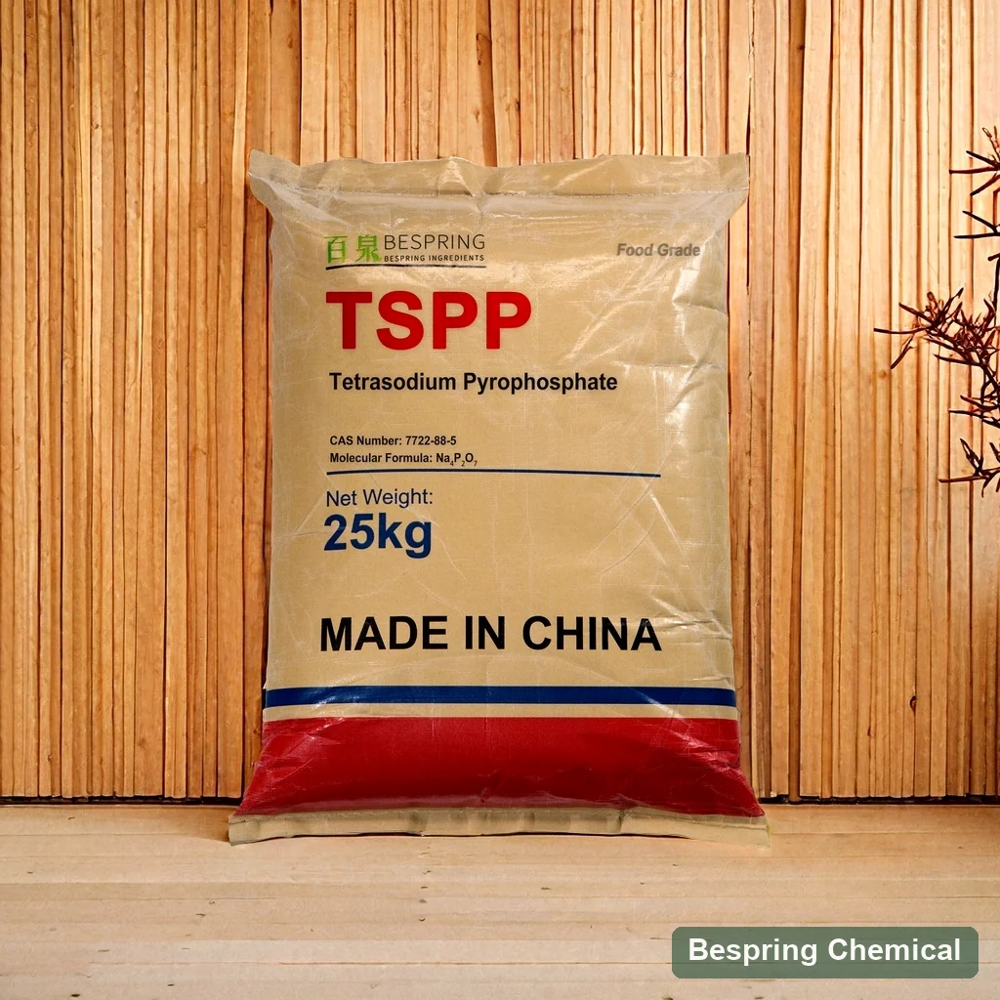
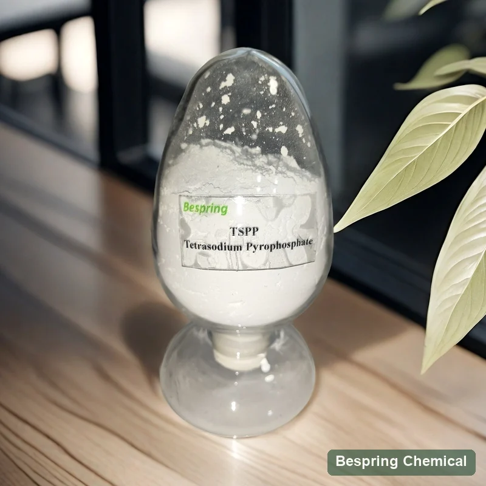
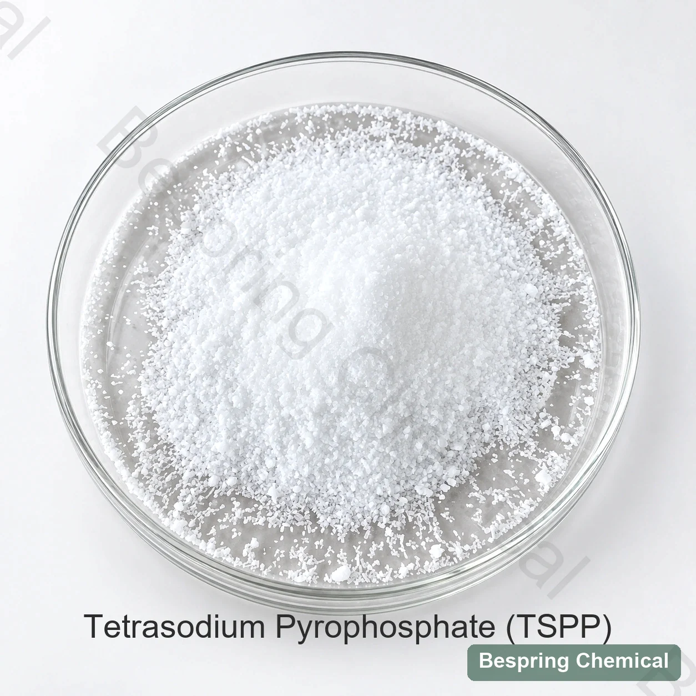

pH and protein charge
Protein charge and hydration depend on the food’s pH and salt/mineral environment. Measure raw and finished pH alongside texture, color and flavor rather than using the TSPP solution pH as a finished-food target.
Alkaline condensed phosphate · E450(iii) / INS 450(iii)
Food grade tetrasodium pyrophosphate (TSPP), also called tetrasodium diphosphate, is an alkaline food phosphate used as a buffering agent, emulsifier and sequestrant. Bespring supplies the anhydrous Na4P2O7 product described here. Specify the food standard, fluoride limit, physical form and application before selecting an offered grade for meat, cheese or other permitted food systems.
*Commercial reference values. Confirm the current offered-grade specification, methods, MOQ and shipment terms in the quotation.

Exact product identity
Tetrasodium pyrophosphate (TSPP), also called tetrasodium diphosphate or sodium pyrophosphate tetrabasic, is Na4P2O7, CAS 7722-88-5, INS 450(iii) / E450(iii). The JECFA monograph lists emulsifier, buffering-agent and sequestrant functions. Its water solution is alkaline; this is distinct from acidic sodium acid pyrophosphate (SAPP).
This page describes anhydrous food grade TSPP, with molecular weight 265.94 g/mol. JECFA also describes the decahydrate Na4P2O7·10H2O (446.09 g/mol). Their water content and ignition-loss requirements differ; they are not equal-weight substitutes. Match the hydration form across the RFQ, specification, label and COA. A chemical name alone does not qualify an industrial grade for food use.
Functions and formulation conditions
TSPP contributes sodium and pyrophosphate ions and can influence pH and mineral–protein interactions. Its reference solution pH is not a prediction of the final food pH. Assess the complete formulation, permitted use and process rather than assuming a fixed yield or texture benefit.
Protein charge and hydration depend on the food’s pH and salt/mineral environment. Measure raw and finished pH alongside texture, color and flavor rather than using the TSPP solution pH as a finished-food target.
Evaluate TSPP with salt, water, temperature and mechanical action for protein extraction and bind. Purified-protein research on salt and magnesium pyrophosphate supports the actomyosin mechanism; it does not establish a yield guarantee for a commercial TSPP grade.
Pyrophosphate can interact with polyvalent ions such as calcium. The result depends on mineral load, pH, proteins and competing ingredients; sequestration does not guarantee a clear solution or prevent precipitation in every food.
Concentration, particle form, water temperature and addition order affect dissolution and local pH. Validate the real brine or blend.
Application-specific qualification
Consider these food applications only where the destination rules permit the intended use. Define a measurable target and compare the offered grade with a control under matched processing conditions.
Target: protein extraction, bind and cook yield.
Validate: salt, pH, temperature, mix/tumble time, cook loss, purge, bite and flavor.
Target: controlled moisture and texture.
Validate: species, treatment, pickup, thaw drip, sodium, appearance and sensory effects.
Target: mineral/protein balance in an emulsifying-salt system.
Validate: calcium, moisture, pH, heat/shear, melt, oiling-off and set. A controlled processed-Cheddar study found a complex concentration response at constant pH, so more TSPP cannot be assumed to give better melting.
Target: buffering or sequestration where permitted.
Validate: hardness, clarity, sediment, flavor, pH drift and protein/acid interaction.
Regulatory boundary: E/INS identity does not authorize every food or dosage. Confirm destination food category, maximum level, labeling and total phosphate.
Commercial reference and test basis
The table preserves the commercial limits in the available Bespring TSPP overview. They are not batch results or a complete standard-conformity assessment. A separate available TSPP product sheet gives an assay minimum of 98.0%, rather than the 96.5–100.5% range below. Agree the current grade, assay basis and method in the signed specification before comparing offers.
On small screens, swipe the table to read the qualification notes.
| Field | Commercial reference* | Qualification note |
|---|---|---|
| TSPP assay | 96.5–100.5% | JECFA: ≥95.0% on the ignited basis. Commercial basis/method need confirmation; a 100.5% analytical upper limit does not imply physical purity above 100%. |
| P2O5 | 52.5–54.0% | Reported as P₂O₅, not elemental phosphorus or TSPP assay. Confirm the reporting basis and method. |
| pH | 9.9–10.7 at 10 g/L | JECFA: 9.9–10.8 for a 1 in 100 solution. Confirm preparation, temperature and measurement method for the stated 10 g/L commercial test. |
| Loss on drying | ≤0.5% | Commercial temperature and duration are not stated. Drying loss is distinct from ignition loss. |
| Loss on ignition | ≤0.5% | JECFA: ≤0.5% for anhydrous material and 38–42% for decahydrate, using 105°C for 4 h then 550°C for 30 min. Commercial conditions are not stated. |
| Water-insoluble matter | ≤0.20% | JECFA: ≤0.2%. Confirm the hot-water insoluble-matter method and sample basis. |
| Orthophosphate | Pass | Qualitative commercial result. Define the test and acceptance endpoint; “Pass” is not a measured percentage or the complete JECFA identity testing. |
| Arsenic | ≤3 mg/kg | JECFA: ≤3 mg/kg as arsenic; confirm element-specific method and lot result. |
| Lead | ≤4 mg/kg | JECFA: ≤4 mg/kg as lead; confirm element-specific method and lot result. |
| Heavy metals as Pb | ≤10 mg/kg | Aggregate “as Pb” field; it does not replace separate lead or other element testing. |
| Fluoride | ≤50 mg/kg | The reference limit exceeds JECFA’s ≤10 mg/kg as fluoride; it cannot guarantee that requirement. |
| Appearance | White powder/granular | Confirm the offered powder/granular form and particle-size requirements; photos do not define a guaranteed distribution. |
The commercial fluoride limit is ≤50 mg/kg, while the cited JECFA monograph specifies ≤10 mg/kg. The commercial limit cannot guarantee the JECFA requirement, although an individual batch may test lower. Request a specification aligned with the selected standard, the analytical method and a batch COA. A “food grade” label or matching selected table values does not establish full conformity.
For mass-based reporting, 1 ppm equals 1 mg/kg. Assay, P₂O₅, drying loss and ignition loss measure different attributes and must not be substituted for each other. The JECFA assay uses zinc-sulfate precipitation followed by titration and is reported on the ignited basis; confirm whether the offered-grade result uses that method and basis.
The cited specification distinguishes anhydrous and decahydrate forms, specifies the ignited-basis assay and gives identification and purity tests.
Open the TSPP monographThe FDA inventory identifies CAS 7722-88-5 and technical effects including emulsifier salt, pH control and sequestration. It is not a certification of the supplied product.
Review the FDA entryFor US food use, 21 CFR 182.6789 recognizes tetra sodium pyrophosphate as safe when used in accordance with good manufacturing practice. Check the applicable food standard, category and labeling requirements separately; this is not “FDA approval” of a Bespring grade.
Avoid acronym and function confusion
They differ in cation, phosphate structure, acid/base character and intended function; they are not equal-weight substitutes.
Bench-to-production approval
State anhydrous food grade, destination, food category and target standard.
Require methods for assay, pH, LOI/LOD, insolubles, fluoride, arsenic and lead.
Fix water, salt, temperature, order, concentration, mechanical action and heat process.
Record clarity, pickup, cook loss, purge or thaw drip—not only initial absorption.
Measure pH, color, texture, flavor, emulsion stability and total sodium/phosphate.
Request the current specification/TDS, SDS, representative COA and actual batch COA. Align lot identity, packing, storage and change notification with the approved grade. Verify any requested certificate or allergen/source declaration for the offered product and relevant site.
Appearance and storage references
The available TSPP product sheet describes net 25 kg bags with a kraft-paper outer bag and PE inner bag, with loading references of 20 MT / 20GP without pallets and 18 MT with pallets. The overview lists a 500 kg MOQ. Confirm these terms, labels and the actual load plan in the quotation.
Store in a cool, dry, ventilated place away from sunlight, heat, humidity and poisonous materials. The overview specifies a temperature not exceeding 30°C; the separate product sheet gives a 24-month shelf life from manufacture. Confirm the applicable storage instructions, intact-pack conditions and shelf life for the offered grade, including handling after opening.



Buyer questions
This page describes anhydrous Na₄P₂O₇, CAS 7722-88-5, with molecular weight 265.94 g/mol. JECFA also describes the decahydrate, which has different water content and ignition-loss requirements. Specify the form on the RFQ, specification, label and COA; do not assume equal-weight equivalence.
No. The commercial fluoride limit is ≤50 mg/kg, compared with ≤10 mg/kg in the cited JECFA monograph. An individual batch may be lower, but an aligned specification, confirmed methods and batch COA are required. The available commercial sheets also differ in assay expression, so agree the offered grade and reporting basis.
TSPP provides alkaline pyrophosphate functionality for protein and mineral-system trials. Assess salt, pH, raw-material composition, mixing or tumbling, heating and storage. Measure cook loss and purge in meat, and melt, oiling-off and texture in cheese; no fixed improvement is guaranteed.
No. STPP has a different phosphate chain, TKPP supplies potassium instead of sodium, and SAPP is an acidic leavening phosphate. Compare permitted use, composition, dissolution, pH and process results rather than replacing equal weights.
No. The commercial pH reference is 9.9–10.7 at 10 g/L. The food response depends on concentration, acids, proteins, minerals and other ingredients. Measure the complete formulation during processing and storage.
Provide anhydrous food grade, destination and food standard, assay basis, fluoride and other critical limits, powder/granular preference, application and process, quantity, packaging and delivery terms. List required TDS, SDS, COA and declarations, and confirm certificate scope and shelf life in the actual offer.
Reviewed 2026-10-04 · Technical references: FAO/WHO JECFA, US FDA/eCFR and the cited protein/processed-cheese research.
Related qualification resources
Plan extraction, pickup, cook-loss, purge and sensory trials.
Evaluate treatment, uptake, thaw drip and appearance.
Connect salt choice with calcium, casein, heat and shear.
Balance solubility, alkalinity and system performance.
Application-led sourcing
Request a quotation and offered-grade documents. Share the food standard, process and critical limits so the proposal can be reviewed against your specification.